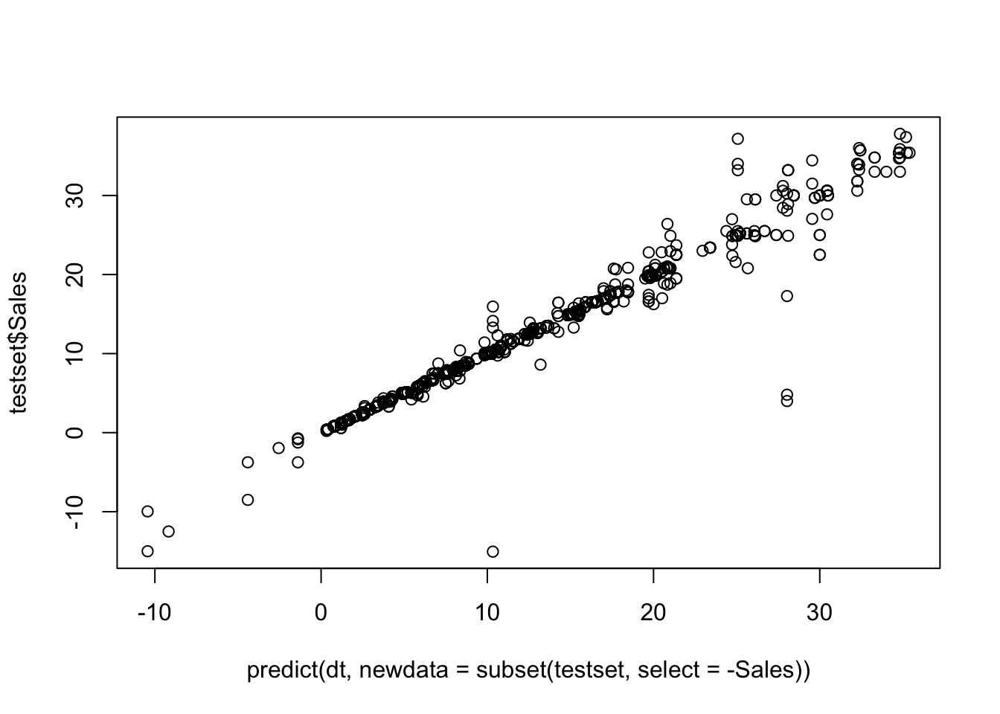

Chapter 3 [Model 2] Tree Regression
3.1 Perform Tree Regression
The regression tree plot is impossible to interpret. By setting cp = 0, the expanded as much as it could without being pruned. Although we human are unable to interpret any information from the plot, the machine will understand it thoroughly, and offer accurate predictions.
3.2 Tree Regression Evaluation

## [1] "The RMSE is: 1.60491397575623"When we plot the predict values against the true values, we observe that it forms a diagnal line. This means the predict values are really close to the true values. The result of RMSE is only 1.6, also suggesting that the model has great performance in predicting Sales based on Quantity, UnitPrice, month, week and time.
3.3 Interpretation of Tree Regression Model
- VIP
The Variance Importance Plot suggests that only Quantity and UnitPrice are important in the Tree Regression model. The other three variables are neglected in this model.
- SHAP
SHAP (SHapley Additive exPlanations) is a method that explains how individual predictions are made by a machine learning model. SHAP deconstructs a prediction into a sum of contributions from each of the model’s input variables.
From the above plot, we may infer that Quantity and UnitPrice had significant impacts on the model’s prediction. Note that these two variables also have large standard deviation. We may conclude that most of the variance in Sales come from these two variables. Similar to the results from VIP, month, week and time do not have enough influence in prediction.